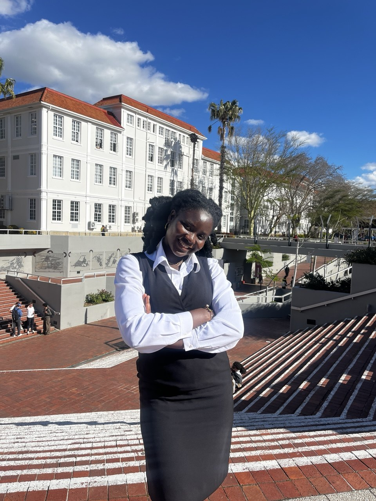

Expected - 2028
PhD in Mathematics
Stellenbosch University, Stellenbosch, South Africa
Based at AIMS South Africa.
PhD Student in Mathematics
Stellenbosch University & AIMS South Africa
Research focus: algebraic biology

I am a PhD student in Mathematics at Stellenbosch University, based at AIMS South Africa. My research focuses on algebraic biology and the use of algebraic structures to analyze complex biological systems.
I previously completed an MSc in Mathematical Sciences at AIMS SA and a BSc in Mathematics at the University of Energy and Natural Resources in Ghana. I aspire to contribute as a lecturer and researcher in mathematics.
Physica A: Statistical Mechanics and its Applications, 674, 130700, 2025.
Defended my PhD research proposal at Stellenbosch University, exploring interaction algebras of ecological networks. LinkedIn
Represented AIMS South Africa at the launch of National Science Month at Vaal University of Technology, helping make mathematical sciences accessible through outreach. Public update
Participated in Africa Science Week 2026 at AIMS South Africa as part of the Pan-African Science Forum. AIMS post
Received the Academic Excellence Award in the Mathematical Sciences stream at AIMS South Africa. AIMS
Expected - 2028
Stellenbosch University, Stellenbosch, South Africa
Based at AIMS South Africa.
September 2024 - July 2025
African Institute for Mathematical Sciences (AIMS), Cape Town, South Africa
2024/2025
AIMS South Africa, Mathematical Sciences stream.
2026 - 2028
Stellenbosch University and AIMS South Africa.
2024 - 2025
AIMS South Africa.
November 2023 - September 2024
University of Energy and Natural Resources, Sunyani, Ghana
Organized tutorials on Abstract and Linear Algebra, Numerical Analysis, Operations Research, and Partial Differential Equations. Marked and graded assignments.
October 2022 - October 2023
Ecobank, Sunyani, Ghana
Assisted customers and facilitated onboarding to Ecobank online platforms.